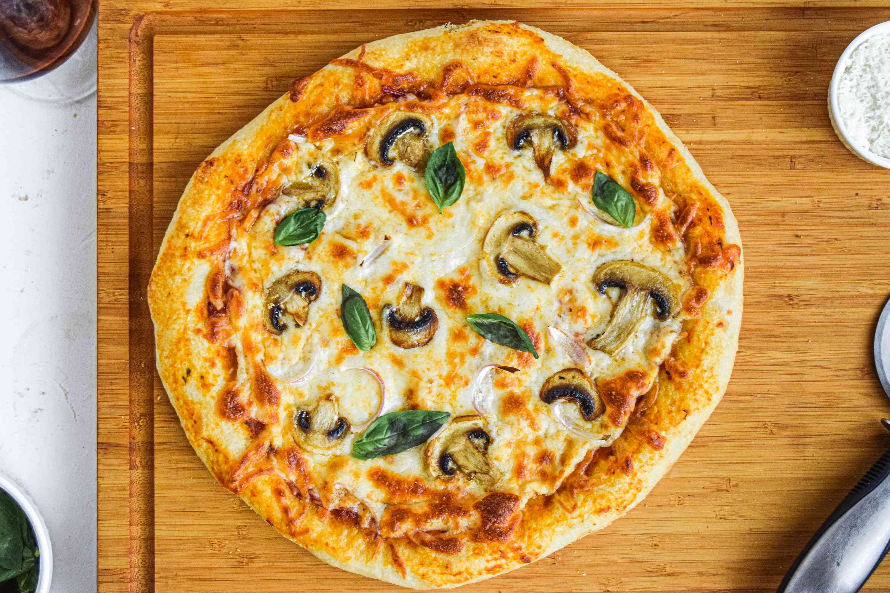

Veggie Pizza Recipe

Veggies are very good. PRO TIP Mix Veggies with unhealthy foods.
Ingredients You Need:
- 2 Pack of Mushroom I love mushroom
- 3 pack of spinach I love spinach.
- 2 Tomato Paste
Recipe to Follow
- Wash your Spinach and Mushroom
- Cut the Mushroom
- Make the Dough and put tomato paste on it
- Put in the oven after putting Spinach and Mushroom as the top